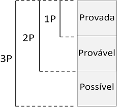

No setor de Petróleo e Gás, as companhias são cíclicas. Seus resultados tem forte correlação com o preço da commodity subjacente (barrril de petróleo). A indústria pode ser dividida em três segmentos:
Upstream (E&P) Exploração dos reservatórios/produção das reservas de óleo e gás. Dois métodos contábeis que podem ser aplicados: método dos esforços bem sucedidos (Successful efforts accounting) ou custo total (full cost accounting)
Midstream Os hidrocarbonetos são transformados em produtos prontos para um uso específico, como por exemplo gasolina, óleo lubrificante, diesel, etc. Atividades de refino.
Downstream Fase de logística. Transporte, distribuição e comercialização dos derivados de petróleo
*** Abertura do setor *** O marco inicial da abertura do setor do Brasil é comumente chamado de Round Zero, na qual a ANP, órgão regulador do setor de petróleo e gás no Brasil e a Petrobras assinaram 397 Contratos de Concessão de áreas de exploração e produção em 1998
Custos envolvidos no segmento upstream:
Custo de aquisição Valores para adquirir direitos de explorar, perfurar/produzir óleo e gás natural. Exemplo: Bônus de assinatura, custos de participação em rodadas de licitação
Custo de exploração Verificações para identificação de áreas específicas nas quais possivelmente se tenha reserva de óleo e gás. Exemplos: Custos para perfurar poços exploratórios, gastos com geologia e geofísica
Custos de desenvolvimento Incorridos no intuito de obter acesso às reservas provadas e fornecer instalações para extrair, tratar, recolher e estocar óleo e gás
Custos de produção (lifting costs) Depreciação de equipamentos, mão de obra e demais custos associados à extração de óleo e gás. Forte dependência de onde o petróleo está localizado: offshore, onshore, águas rasas ou Pré-Sal
Os dois principais métodos contábeis utilizados em E&P
Método dos Esforços Bem-Sucedidos (Sucessful Efforts) Contabilização dos gastos de exploração no ativo que resultaram em descoberta de reservas provadas. Necessária a relação direta entre as reservas e os custos incorridos. Neste caso, gastos com geologia, por exemplo, e outros custos vinculados a reservas não provadas são registrados no resultado da empresa como despesas. Maioria das companhias fora dos EUA utiliza esse método.
Método do custo total (Full cost accounting) Sem relação direta entre os gastos de E&P e as reservas provadas. Considera que todos os custos relacionados com atividade de aquisição, exploração e desenvolvimento são necessários para conclusão da produção das reservas s (JENNINGS, FEITEN E BROCK, 2000)
Relatório de certificação das reservas Um documento de extrema importância em empresas de capital aberto é o relatório de certificação das reservas com estimativadas das reservas provadas (1P), prováveis (2P) e possíveis (3P) e receitas futuras Destaca-se que a produção refere-se a quanto de oléo e gás está sendo extraido e sendo vendido. Medido em Barris de Óleo (Barrels of Oil – bbl ) ou Metros Cúbicos (Cubic Feet – cf ) enquanto as reservas são o total de óleo e gás que se tem disponível em primeira instância. Logo, quanto mais é produzido, mais as reservas diminuem. Medidas normalmente apuradas e conversões Óleo e Condensado (MBBls) – Milhares de Barris Gás natural (MMCf) – Milhões de metros cúbicos Caso se queira fazer uma “conversão”, em termos de energia temos que: 1 barrel of oil = 5.8 MMBtu 1000 cubic feet = 1 MMBtu Dada essa relação, podemos fazer a conversão para barris de óleo e equivalente (BOE) ou milhares de metros cúbicos equivalente (Mcfe). Geralmente, se mais de 50% da produção é concentrada em gás, converte-se para Mcfe, caso contrário utilza-se BOE
Tipos de reserva
As reservas nos mostram quanto a companhia tem disponível para extração. No entanto, esta extração nunca é certa, então as reservas são categorizadas por probabilidades
Provada Mais de 90% de possibilidade de extração de petróleo e gás natural.
Provável Probabilidade de ao menos 50%
Possíveis Probabilidades abaixo de 50%

Tipos de petróleo?
Existem centenas de tipos diferentes de petróleo, com seu preço dependendo de características como o teor de enxofre e gravidade (º API) Petróleos leves (“light”) possuem proporção alta de hidrocarbonetos menores, que permitem ao refinador produzir produtos de alto valor como a gasolina
Petróleos pesados (“heavy”) Maior proporção de hidrocarbonetos pesados, permitindo ao refinados fabricar apenas produtos de menor valor Já no que tange ao enxofre: Alto teor de enxofre classificados como azedos (“sour”) e aqueles com menor percentual de doces (“sweet”)
O petróleo brent, classificado como light sweet, apesar de representar menos de 1% da produção mundial, é utilizado em grande parte das transações globais. Vale ressaltar que o óleo produzido com menor qualidade costuma ser negociado com desconto em relação ao Brent, como é o caso da Petrorio com os campos de Tubarão, Polvo e Frade, com seu petróleo heavy sour
Modelo Net Asset Value (NAV)
Este modelo é uma alternativa ao Discounted Cash Flow em empresas de óleo e gás, especialmente aquelas focadas em exploração e produção (E&P) As maiores diferenças comparadas com um DCF padrão:
- No modelo NAV a companhia nunca aumenta suas reservas, logo não há CAPEX adicional nos anos futuros
- Neste modelo os ativos são avaliados separadamente e psoteriormente unificados ao final Portanto, ao assumir este modo de avaliação, você obtem a resposta para a seguinte pergunta; “Esta empresa deixa de operar quando suas reservas se esgotarem. Então, quanto de lucro posso gerar de hoje até o esgotamento das reservas assumindo nenhum futuro reinvestimento para encontrar/adquirir reservas?”
Sazonalide Venda de combustíveis: Concentrada no 2º semestre Petróleo e derivados: Sem sazonalidade na produção